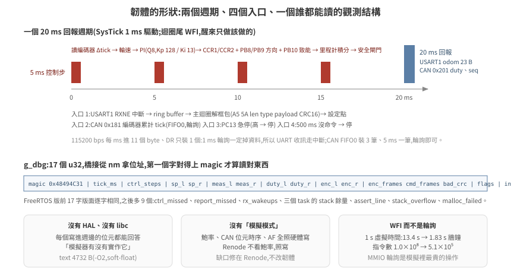
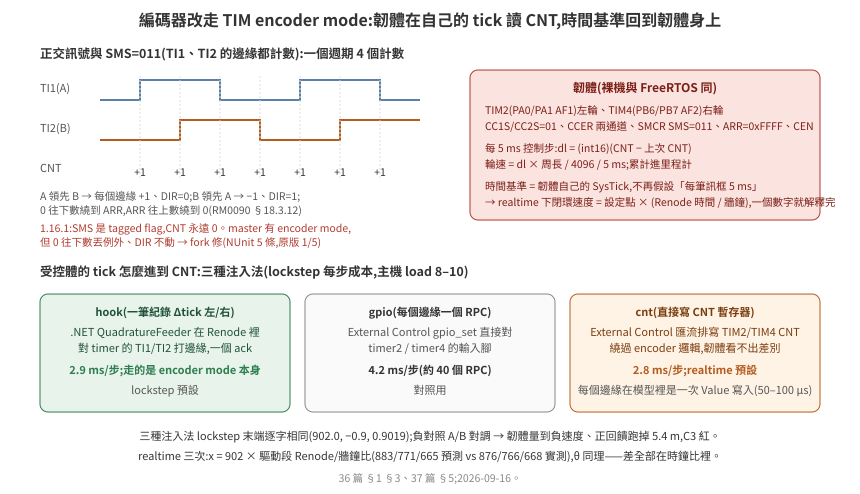

36 · STM32F4 韌體在 Renode 上開機:「型別存在」不等於「夠用」
把一支韌體放進 Renode,第一個問題不是「跑不跑得起來」,是「它跑起來之後,你怎麼知道它在跑」。第二個問題是,平台描述裡列了 USART、TIM、CAN,這些模型對你的韌體夠不夠用——而這件事只能逐個暫存器驗,型別名稱不會告訴你。
這一篇用一支最小的差速底盤控制器韌體走一遍:它的形狀、平台描述怎麼來、每個週邊怎麼驗、兩條觀測管道、以及一個讓模擬速度差 7 倍的設計選擇。
驗證狀態:全部在本機實測。Renode 1.16.1(
antmicro/renode:latest,buildd66b0c2a-202602160923),arm-none-eabi-gcc 12.2,docker 2 核,主機另有負載(load ≈ 4/14),2026-09-15。程式碼在examples/hil-stm32/firmware/與renode/。「既有內部專案」指另一個在 Renode 1.16.1 上跑量產韌體的專案,其結論匿名化引用。
1. 韌體的形狀
firmware/main.c 約 400 行,做真實下位機做的事:
USART1 收 cmd_vel 框包(CRC16)→ v, w
TIM2/TIM4 encoder mode 讀 CNT → 輪速量測 + 里程計(calib `encoder_source`;舊路 CAN 0x181 訊框仍在)
每 5 ms:v, w 各自過斜坡(accel / alpha)→ 兩輪設定點 → PI + 速度前饋 → TIM3 PWM(CCR1/CCR2)+ 方向腳 PB8/PB9 + 致能腳 PB10
每 20 ms:USART1 回 odom、CAN 0x201 回馬達狀態(flags byte 同一份)
安全:500 ms 沒命令 → 停;PC13 急停 → 停;PC14/15 驅動器故障(低)→ 停;PC0 保險桿斷 → 拒絕前進
duty ≥ 60% 而輪不動 200 ms → 堵轉鎖住;300 ms 沒 PING → 降速到 0;IWDG 1 s 沒餵 → 整顆重置

三個設計決定,每一個都與「在模擬器裡驗」有關:
沒有 HAL、沒有 libc。 暫存器定義自己寫(regs.h,位址與位元出自 RM0090),只連 libgcc(soft-float)。理由:每一個寫進週邊的位元都要能回答「模擬器有沒有實作它」。HAL 會在你看不到的地方碰暫存器——既有內部專案的 HAL_CAN_Init() 在 Renode 上凍在 Error_Handler(),而那支韌體的作者沒有寫過任何一行 CAN 暫存器。
沒有「模擬模式」。 鮑率、CAN 位元時序、GPIO 的 AF 設定全部照真硬體寫。Renode 不看鮑率,照寫。
觀測結構固定版面。 g_dbg 是一個 volatile 結構,第一個欄位是 magic 0x48494C31,後面是 tick、控制步數、設定點、量測、duty、收到的訊框數、壞 CRC 數、旗標、初始化錯誤碼、ring buffer 溢位數。橋接從 nm 的輸出拿位址,讀第一個字確認讀對了東西(§4)。同樣的做法反過來用一次:g_cfg(magic 0x48494C43,固定放在 .data 開頭 0x20000000)放 PI 增益、斜坡、前饋,橋接開機後經 External Control 寫進去——增益掃描(tools/tune_sweep.sh)與「關掉斜坡」的負對照都不用重編韌體,而 [effect] 讀回來印一行,證明改的是這支韌體正在用的值。
大小:text 5092 B、data 240 B、bss 328 B(-O2;斜坡、前饋與 g_cfg 加了 360 B)。
2. 平台描述:vendor 一份,拿掉一行
Renode 內建的 platforms/cpus/stm32f4.repl 對這支韌體夠用——記憶體配置(flash 2 MB @ 0x08000000、SRAM 256 KB @ 0x20000000)、USART1/2、TIM3、GPIO A–C、CAN1、NVIC、SysTick 都在。但要vendor 一份進 repo(renode/stm32f4-1.16.1.repl),兩個理由:
- 它會上網。 檔尾有一行
ApplySVD @https://dl.antmicro.com/.../STM32F40x.svd.gz,--network none下重試五次才放棄。SVD 只影響 log 裡的暫存器名稱,拿掉那行沒有功能損失。 - 版本要鎖。 既有內部專案比對過:master 分支的同名檔已與 1.16.1 不同(
i2c1的型別就不一樣)。浮動引用會讓「昨天還能跑」變成難查的問題。
renode/hilctl.repl 只有一行 using "./stm32f4-1.16.1.repl";這支韌體不需要基底檔沒有的週邊。
3. 逐項盤點:「有」是什麼意思
判斷一個週邊「內建有沒有」,要查的是實作深度,不是型別名存不存在。下表每一列都是用 monitor 直接讀寫暫存器驗的,不載韌體(探針腳本的做法見 §6)。
| 週邊 | 韌體碰的暫存器 | Renode 1.16.1 實測 | 對這支韌體 |
|---|---|---|---|
STM32_Timer(TIM3) |
ARR、CCR1/2、CCMR1(OC1M)、CCER、CR1、CNT | 全部寫入後讀得回;OC1PE / OC2PE 未實作(warning);PWM 通道輸出是真的 GPIO 線:PWM1 模式下 timer.Connections[0].IsSet 在 CNT < CCR 時為 True |
夠用。橋接讀 CCR 算 duty |
| 同上,計數週期 | ARR | 週期是 ARR,硬體是 ARR+1。兩組量測:ARR=999、10 MHz 跑 1 ms → CNT=10(=10000 mod 999);ARR=99 → CNT=1(=10000 mod 99) | PWM 頻率差 0.1%,無感。已修,見 37 篇 §4 |
| 同上,PWM 腳位初值 | CEN、EGR.UG | 致能後、第一次溢位前腳位不動(CNT=200 < CCR=500 時讀到 False);硬體的 OCxREF 是持續比較 | 5 ms 一步的閉環看不到(第一次溢位在 10 µs 內);已修,同上 |
| 同上,encoder mode(TIM2/TIM4) | SMCR.SMS=011、CCMR1 CC1S/CC2S=01、CCER、CNT、CR1.DIR | 1.16.1 沒有:SMS 是 tagged flag,灌正交脈衝 CNT 永遠 0(upstream/probe_encoder.resc)。上游 master 有 encoder mode,但 0 往下數會丟 Value cannot be larger than limit、DIR 不動;修正版(繞回 0↔ARR、DIR 跟計數方向、週期 ARR+1)NUnit 5/5、原版 1/5 |
執行期載入 master 版 timer 只換 TIM2/TIM4(upstream/STM32_Timer_Master.cs、stm32f4-encoder.repl);TIM3 仍是原版 |
| 同上,執行成本 | ARR、CCR(事件率) | 10 kHz 載波 × 3 個 LimitTimer = 每秒 3 萬個 C# 事件,自由跑只到 0.55×;ARR 拉到 152 Hz 就 1.17×(35 篇 §5.1) |
lockstep 無感;realtime 模式跟不上牆鐘。每個事件 50–100 µs 且與回呼內容無關(§5.1),calib.json 的 pwm_prescaler 是旋鈕,模型裡沒有不改可觀測行為的修法 |
STM32_UART(USART1/2) |
SR(RXNE/TXE/TC)、DR、BRR、CR1 | TXE 恆為 1;RX 有佇列。TC 在 CPU 寫 DR 後正常設回、TCIE 拉中斷(本篇探針);既有內部專案在 DMA 傳送下量到「TC 永不重設」,那條路徑本篇沒走,兩者不衝突 | 韌體輪詢 TXE、不等 TC。真硬體同樣正確 |
STMCAN(CAN1) |
MCR/MSR、BTR、TSR、TI0R/TDT0R/TDL0R/TDH0R、RF0R、RI0R/RDT0R/RDL0R/RDH0R、FMR/FM1R/FS1R/FFA1R/FA1R/F0R1/F0R2 | MCR.INRQ=1 → MSR 0xC01(INAK=1,SLAK 清);mailbox 寫入 TXRQ 後 FrameSent 立刻觸發;OnFrameReceived() 注入的訊框進 FIFO0(FMP0=1、RI0R 帶 STID) |
夠用,但濾波器有一個坑(下一段) |
STM32_GPIOPort |
MODER、AFRL、IDR、ODR、BSRR | 輸出腳在 Connections[n];輸入腳用 OnGPIO(n, v);State 是 protected,monitor Python 讀不到 |
夠用 |
STM32_IndependentWatchdog(IWDG) |
KR(0x5555/0xCCCC/0xAAAA)、PR、RLR、SR | 照 RM0090 第 21 章的序列:Reload 才把 RLR 載入、起動從 0xFFF 起、PR 的 2^(2+PR) 分頻;逾時 machine.RequestReset() → 週邊全部重置、監視器的 macro reset 重載 ELF。RCC_CSR 的 IWDGRSTF 不設(模型裡的 TODO),而且 STM32F4_RCC 在系統重置時把重置旗標回到上電值(RM0090 §7.3.21:旗標只在 power reset 清);SR 的 PVU/RVU 永遠 0 |
重啟本身夠用:韌體 2.0 s 死掉、2.995 s 重啟。重置來源:原版靠 .noinit 計數;修正版(RCCFIX=1,STM32_ResetFlags.patch)重啟後 RCC_CSR = 0x20000000(38 篇 §1.2) |
STM32_GPIOPort,輸入腳 |
PUPDR、IDR | 不看 PUPDR:輸入腳預設 0,機器重置後也回 0 | 低有效的腳(nFAULT、保險桿常閉接點)由橋接扮演 pull-up 拉高,重啟後再拉一次 |
STM32F4_I2C(I2C3,IMU 用) |
CR1(START/STOP/ACK/PE)、CR2、DR、SR1(SB/ADDR/BTF/RxNE/TxE/AF)、SR2 | 第一筆交易正常(WHO_AM_I_G 讀到 0xD4),之後每一筆都錯:模型在 STOP 與 repeated START 都不呼叫從端的 FinishTransmission(),I2CPeripheralBase 停在「收資料」狀態,下一筆交易的暫存器位址被當成資料寫進上一個暫存器。閉環量到:陀螺儀讀值恆為 −1687 mrad/s、0.545 s 誤報 SLIP |
不夠用。上游 master 已換成 STM32F1_I2C(F1/F2/F4 同一代 I2C,commit 033ee44 修了這件事);1.16.1 執行期載入它的逐字副本(IMU=1,38 篇 §1.3) |
LSM330_Gyroscope(I2C 0x6A) |
WHO_AM_I_G、CTRL_REG1..4_G、OUT_Z_L/H_G | 靈敏度錯:輸出 = 角速度 × (65536/500 − 1) = 130 digit/dps,datasheet(DocID023426 Rev 3)表 3 是 8.75 mdps/digit = 114.3 digit/dps,照 datasheet 寫的韌體讀到的角速度高 14%;超過約 252 dps 會繞回不飽和;WHO_AM_I_G、CTRL_REG1..3_G 沒定義(讀 0、寫入丟掉)。另外 I2CPeripheralBase 不看子位址 MSb 的自動遞增、Read(count) 永遠回 1 byte |
修在模型:PR #254,NUnit 修正版 5/5、原版 0/5;韌體每筆交易只讀一個暫存器(datasheet 允許),多 byte 讀取這條路沒走 |
| NVIC + SysTick | ISER、SysTick CSR/RVR/CVR | SysTick 頻率來自平台描述的 systickFrequency: 72000000,不是 RCC;USART1 IRQ 37 正常進。ENABLE 0→1 不從 RELOAD 載入——先寫 CVR 再寫 LOAD 的順序(FreeRTOS port)第一個週期跑滿 2^24 cycle |
裸機版先寫 LOAD,沒踩到;39 篇 §4 踩到,已修 |
CAN 濾波器的坑:FMR 的重置值是 0x2A1C0E01,其中 CAN2SB(bit 13:8)= 14,意思是 bank 0–13 屬於 CAN1。探針一開始寫 FMR = 1(只想設 FINIT),把 CAN2SB 清成 0——bank 0 從此屬於 CAN2,CAN1 的接收路徑對它 Where(BelongsToMaster) 一濾,訊框靜默丟掉:OnFrameReceived() 呼叫成功、FrameReceived 事件照樣觸發,FIFO 就是空的。真硬體的 HAL 用讀-改-寫所以不會踩到;自己寫暫存器的人會。韌體的 can_init() 因此全部用 |= / &=。
另一個與既有紀錄不一致的點要誠實寫:既有內部專案的結論是「STMCAN 沒實作 HAL_CAN_Init() 要的 MCR/MSR 交握」,本篇探針從匯流排直接寫 INRQ 卻看到 INAK 正確回應。兩者可能都對——HAL 的序列多了 SLEEP 清除與逾時計算,那條路徑本篇沒有走。這裡只能說「自己寫的序列交握有回應」,不能說「既有紀錄錯了」。
3.1 編碼器:從 CAN 訊框改成 TIM encoder mode
第一版的編碼器是受控體每 5 ms 送一筆 CAN 累計 tick——方便,但時間基準在橋接手上:realtime 模式下橋接守不住 5 ms 節拍,韌體每筆訊框都當 5 ms 算,閉環速度就跟著橋接的節拍掉(35 篇 §5.1)。真板的做法是 TIM 的 encoder mode(RM0090 §18.3.12):兩路正交輸入接到 TI1/TI2,硬體自己加減 CNT,韌體在自己的 5 ms tick 讀 CNT 差。改成這樣之後,時間基準是韌體的 SysTick,受控體與橋接的節拍只影響 CNT 在什麼時候跳,不影響「5 ms」是多長。

韌體(兩版同):TIM2(PA0/PA1 AF1)左輪、TIM4(PB6/PB7 AF2)右輪,ARR=0xFFFF、CC1S/CC2S=01、CCER 兩通道、SMS=011、CEN;控制步 dl = (int16)(CNT − 上次),累計進里程計。calib.json 的 encoder_source 切換(tim / can),ENC_SOURCE_TIM 進 calib.h;CAN 0x181 收到只計數不採用。
受控體的 tick 進 CNT 有三種注入法(橋接 --enc,37 篇 §5):hook(一筆紀錄,Renode 裡的 .NET QuadratureFeeder 對 TI1/TI2 打邊緣,走 encoder mode 本身)、gpio(每個邊緣一個 External Control RPC)、cnt(直接寫 CNT)。lockstep 三種末端逐字相同(900.8, 0.4, 0.8627;速度源受控體時量的,扭矩受控體的參考值是 905.1, −1.6, 0.8521),注入那一段每步 2.5 / 4.1 / 2.3 ms(load 7–8);負對照 A/B 對調 → 韌體量到負速度、正回饋跑掉 5.4 m、C3 紅。realtime 下每個邊緣在模型裡是一次 LimitTimer.Value 寫入(§5.1 的 50–100 µs),8k 邊緣/s 會把模擬執行緒吃掉,所以 realtime 不走邊緣。取樣式 cnt 在閒時 C9 一次都沒綠過,realtime 預設改成第四種 cont(CNT 在韌體讀的當下外插,37 篇 §5、35 篇 §5.1)。
以下 realtime 同腳本三次(cnt)的末端:x = 902 × 驅動段的 Renode/牆鐘比(預測 883 / 771 / 665,實測 876 / 766 / 668)、θ = 0.9019 × 轉向段的比(0.620 / 0.682 / 0.598 vs 0.611 / 0.689 / 0.598)——差全部在時鐘比裡,一個數字解釋完。這就是 35 篇 §5.1 留下的開放項的結論。
3.2 IMU:datasheet 給了什麼、韌體要自己補什麼
橋接寫進陀螺儀模型的若是受控體真值,韌體拿到的是一顆不存在的完美感測器;打滑門檻與「沒有接觸不誤報」都在它上面量。真元件的誤差先從 datasheet 抄。LSM330(DocID023426 Rev 3)Table 3,Vdd 3 V、25 °C,表註「Typical specifications are not guaranteed」:
| 項目 | 陀螺儀 | 加速度計 |
|---|---|---|
| 量程 | ±250 / ±500 / ±2000 dps | ±2 / ±4 / ±6 / ±8 / ±16 g |
| 靈敏度 | 8.75 / 17.50 / 70 mdps/digit | 0.061 / 0.122 / 0.183 / 0.244 / 0.732 mg/digit |
| 典型零點 | ±10 / ±15 / ±25 dps(對應三個量程;表註 4:內建高通可以消掉) | ±60 mg(±2 g;§3.2:一批元件零點的標準差) |
| 雜訊密度 | 沒寫 | 沒寫 |
| 靈敏度誤差 | 沒寫 | 沒寫 |
| 零點溫漂 | 沒寫(§3.2 文字:「changes very little over temperature and over time」) | 沒寫(§3.2 文字引用 Table 3 的「zero-g level change vs. temperature」,表中沒有這一列) |
韌體用 ±250 dps 量程,典型零點 ±10 dps = 174.5 mrad/s,是打滑門檻 45 mrad/s 的 3.9 倍。理想感測器上成立的偵測,換成一顆典型元件就整路誤報——這不是調門檻能收的,韌體要自己估零偏。
橋接的誤差模型(--imu-noise none|datasheet):datasheet = 陀螺儀零偏 +10 dps(一個典型值)、白雜訊 0(datasheet 沒寫雜訊密度,不從別的型號借)。--gyro-bias-mdps 覆蓋零偏;--gyro-noise-mdps 加高斯白雜訊(σ,每步一個樣本,--imu-seed 固定序列)——這一項只拿來掃「雜訊到多大偵測開始誤報」,不代表這顆元件。none 保留成理想感測器的對照組。
韌體估零偏。 內建高通(CTRL_REG5_G 的 HPen)會連慢速轉彎的真實角速度一起濾掉,而且 Renode 的陀螺儀模型沒有定義 CTRL_REG5_G(LSM330_Gyroscope_Fixed.cs 只定義 WHO_AM_I 與 CTRL_REG1..4),所以在韌體做:
- 靜止條件:斜坡後的 v = w = 0(韌體實際給出去的命令,不是收到的),而且兩輪 CNT 差都是 0,連續滿
g_cfg.gyro_bias_still_ms(calib 200 ms)。 - 估計:靜止期間把原始讀值累加成移動平均(前 256 筆取算術平均,之後每筆
sum += gz − sum/256,時間常數 1.28 s);離開靜止就凍結。 - 使用:打滑殘差改成 |(陀螺儀 − 零偏) − 輪差 yaw rate|。
- 估出來之前(累計不到 20 筆,100 ms):不做打滑判斷,命令當 0、odom 旗標亮
IMU_CAL(第 9 位)——車先靜止校正,估完自己解。加速度計(38 篇 §1.4)的零偏用同一個靜止條件、同一個閘門。 gyro_bias_still_ms = 0關掉估計(零偏固定 0)——負對照gyro-bias-uncomp用這個。g_dbg多一字gyro_bias(mrad/s)。
量到的(2026-09-17,lockstep,假受控體;38 篇 §1.3 的 C13):
| 陀螺儀誤差 | 情境 | 韌體估出的零偏(時刻) | 沒有接觸時殘差最大 | C13 |
|---|---|---|---|---|
| 無(理想) | 預設腳本 | 0(0.190 s) | 9 mrad/s | 綠 |
| 零偏 +10 dps(datasheet) | 預設腳本 / 方形 / Nav2 90 s | 174(0.190 s) | 10 / 10 / 9 | 綠 |
| 零偏 +10 dps | 預設腳本,FreeRTOS | 174(0.125 s) | 10 | 綠 |
| 零偏 −10 dps | 預設腳本 | −174(0.190 s) | 9 | 綠 |
| 零偏 +10 dps,Isaac 6.0.1 | 預設腳本 / Nav2 90 s | 174(0.670 s) | 31 / 10 | 綠 |
零偏 +10 dps、不估(gyro-bias-uncomp) |
預設腳本 | 0 | 184 | 紅(0.545 s 誤報) |
| 零偏 0、不估 | 預設腳本 | 0 | 9 | 綠——紅的原因只是零偏 |
| 零偏 +10 dps + 白雜訊 σ 1 / 3 dps | 預設腳本 | 175 / 177 | 20 / 48 | 綠(48 只有單步,沒撐滿 50 ms) |
| 零偏 +10 dps + 白雜訊 σ 10 / 30 dps | 預設腳本 | 187 / 213 | 161 / 482 | 紅(1.185 / 0.650 s 誤報) |
白雜訊那幾列是掃描、不代表這顆元件(datasheet 沒寫雜訊密度):門檻 45 mrad/s、平均 10 步,撐得住每步 σ 3 dps(52 mrad/s),10 dps 撐不住。同 seed 帶雜訊跑兩次,CSV 逐 byte 相同。零偏 −10 dps 與 σ 1–30 dps 那五次量在加速度計與閘門加入之前的韌體上,零偏估計與打滑判斷的邏輯相同;σ 10 dps 在最終韌體上重跑:同樣 1.185 s 誤報,而且 C3 也紅(dθ 0.056 rad)——雜訊讓殘差過門檻的那些步,航向融合(38 篇 §1.5)換成了雜訊更大的陀螺儀。
零偏之後的兩個用途(判準與量測在 38 篇 §1.4–1.5):
- 加速度計抓平移打滑:速度殘差 = 漏積分(前進加速度 − 零偏 − 輪速微分),τ 0.5 s,過 90 mm/s 持續 50 ms 亮
SLIP;量程 ±16 g(撞擊一步就有約 6 g)。 - 航向融合(gyrodometry):每步看陀螺儀殘差的 50 ms 平均,不超過打滑門檻就用輪差,超過才用「陀螺儀 − 零偏」。正常行駛完全不吃陀螺儀漂移,打滑片段航向不跟著錯。距離仍用輪子。
g_cfg.yaw_fusion開關,數值照既有里程計用float(裸機版 soft-float、FreeRTOS 版 hard-float,同一份control.c)。
閘門是量出來的需要:ROS 方形閉環的上位在開機後 70 ms 就送命令,車一路沒有靜止滿 200 ms,零偏整趟沒估出來——打滑偵測整趟沒在做,C13 卻照樣綠。所以橋接在掛了 IMU 而零偏始終沒估出來時直接判 C13 紅;韌體則在估出來之前擋住命令。靜止條件看斜坡後的命令,是因為上位持續送非零命令時,「收到的命令為 0」永遠不成立,閘門會自己鎖死。之後每次停車更新零偏。
閘門的代價是起步可能晚。假受控體開機就靜止,0.190 s 估完,早於預設腳本 0.5 s 的第一個命令,末端 900.8 / 0.4 / 0.8627 不變。Isaac 受控體開機前 0.37 s 輪子 CNT 還在 ±1 tick 之間抖,0.670 s 才估完,命令被擋了 0.17 s:預設腳本末端 x 850.0 mm,原本是 901.1——少的 51 mm 就是 300 mm/s × 0.17 s,C3 仍然綠(odom 對真值 1.0 / 1.0 mm)。
3.3 馬達層:從速度源改成扭矩模型
到 GOAL 7 為止,三個受控體的馬達層是速度源:duty 經死區線性換成目標輪速,再一階趨近,每步的速度變化夾在 motor_accel_max_mm_s2(註解寫「電流限制」,但它與負載無關)。撞到東西之後輪子照轉還是凍住,由 CONTACT=slip|freeze 指定。Isaac 那邊是物理求解,但驅動參數沒人量過——量完是「驅動扭矩上限 ÷ 抓地力扭矩 ≈ 15 倍」(38 篇 §1.6),所以擋住必打滑。
改成扭矩模型之後,打滑或卡住是算出來的。
馬達參數抄一顆具體的減速馬達:Pololu 50:1 Metal Gearmotor 37Dx54L mm 12V(產品頁,2026-09-18 讀):
| 項目 | 規格 | 換算 |
|---|---|---|
| 空載轉速 | 200 rpm @ 200 mA | ω_free = 20.94 rad/s(輪半徑 50 mm → 1047 mm/s,與 wheel_speed_at_full_duty_mm_s 1000 同級) |
| 失速扭矩 | 21 kg·cm @ 5.5 A | τ_stall = 2.06 N·m |
| 建議上限 | 連續 10 kg·cm、瞬時 25 kg·cm | 連續 0.98 N·m、瞬時 τ_max = 2.45 N·m |
產品頁註明失速扭矩與電流是外插值,實際會更早停轉;這裡照抄,不自己調。
公式(三個受控體同一份,改一處要三處一起改):
- 馬達扭矩(直流馬達的扭矩–轉速直線,PWM 當電壓比例):
τ = duty × τ_stall − (τ_stall / ω_free) × ω,夾在 ±τ_max。 - 輪緣力
F_cmd = τ / r;抓地力上限F_max = μ × N,每輪N = m g / 2(忽略腳輪分擔與加減速時的載重轉移,寫明是假設)。 |F_cmd| ≤ F_max→ 滾動:輪速 = 車速 / r,施力 = F_cmd。|F_cmd| > F_max→ 滑動:施力 = sign(F_cmd) × F_max,輪子自己的動力學I_w dω/dt = τ − F_max r(輪子是球,I_w = 0.4 m_w r²)。編碼器數的是 ω,所以打滑時 odom 會多走——這正是 §1.3–1.5 那些判準要抓的東西。- 車體:
m dv/dt = F_l + F_r、J dω_b/dt = (F_r − F_l) × track / 2;撞到靜態障礙物時前進方向的加速度歸零(法向力由障礙物承擔),輪子照第 4 條滑。
Isaac 用同一條直線:速度驅動的 damping × (target − ω) 夾在 maxForce,就是上面的第 1 條。所以不改驅動型別,只把參數換成物理值:damping = τ_stall / ω_free、maxForce = τ_max、target = duty × ω_free(角度單位換 deg/s;damping 的單位用 --probe-physics 實測確認,不用猜)。抓地力那一半本來就是 PhysX 在算(μ 量到 0.508)。
CONTACT 旗標拿掉:高摩擦 → 輪緣力打不過抓地力 → 卡住;低摩擦 → 打滑。對應關係與量到的門檻寫在 38 篇 §1.6。
3.4 牽引力控制:打滑時把 duty 夾住
打滑偵測(§3.2、38 篇 §1.3–1.4)只回報。GOAL 8 加上處置:SLIP 亮著而且殘差還超過門檻時,把 duty 的上限往下壓。
- 切:殘差超標的那一步,
cap直接落到traction_cap_min(不是逐步降)。 - 放:殘差在門檻以下連續
traction_recover_ms之後,每步cap += traction_cap_step,回到 1000 為止;中途再超標就再切一次。 - PI 照算,只是輸出夾在 ±cap;
g_dbg.tc_cap看得到當下的上限。 g_cfg.traction_ctl = 0關掉(負對照traction-off)。- 為什麼不是直接停:停是上位的決定(§6.3 的鎖住);韌體這一層只保證「不要再空轉下去」,殘差一降下來就自己把出力放回去,車繼續走。
參數:traction_cap_min 0 ‰、traction_cap_step 20 ‰/步、traction_recover_ms 200。
為什麼是「一步切到底」而不是斜坡降:輪子在打滑,輪面與地面的相對速度就是多走的距離的來源。切到 0 之後輪子靠地面摩擦減速,角加速度 μNr/I_w = 1.15 / 0.0005 = 2290 rad/s²,從滿速 20.9 rad/s 減到車速只要 9 ms;而 20 ‰/步的斜坡從 1000 降到失去牽引力的 556 ‰(τ = 1.15 N·m 對應的 duty)要 111 ms,這段期間輪子一直在空轉。兩者差一個數量級,判準 C16(38 篇 §1.7)的 20 mm 只有前者做得到。放回去要慢是另一回事:斜坡放回才找得到當下地面撐得住的出力。
反積分飽和:cap 壓下去的期間 PI 的輸出被夾住,誤差卻還在累積。不處理的話,解除壓制的那一刻積分項會把 duty 直接推到滿、立刻再打滑一次。pi_step() 改成條件積分——輸出已經頂到 ±cap、而且誤差還往同方向推的步就不累積。這個保護對原本的 ±1000 飽和一樣成立,不是為了牽引力控制才有的特例。
3.5 I2C 失效之後要自己爬起來
I2C 的傳輸一旦失敗(逾時、沒收到 ACK),週邊會停在半途:BUSY 不放、從機還在等下一個 byte。之後每一次傳輸都會在同一個地方逾時,而韌體外表毫無異狀——讀不到就不做判斷,殘差停在最後一個值,旗標不亮。38 篇 §1.8 記了一次實際發生:1200 步裡有 440–599 步完全讀不到 IMU,判準照樣全綠。
做法和實體板子上一樣:
static void i2c_recover(void)
{
D->imu_fail++;
I2C_CR1(I2C3_BASE) = 0; /* PE = 0 */
I2C_CR1(I2C3_BASE) = I2C_CR1_SWRST; /* RM0090 §27.6.1:SWRST 把狀態機與 BUSY 清掉 */
I2C_CR1(I2C3_BASE) = 0;
i2c_bus_config(); /* FREQ / CCR / TRISE / PE,與開機同一段 */
}
感測器自己的設定(ODR、量程)在從機那側,不會被主機的重置清掉,所以不必重跑 WHO_AM_I 與 CTRL_REG 那段。g_dbg.imu_fail 記次數,橋接每步存進 CSV,驗收比對最後 200 ms 還有沒有在失敗(38 篇 §1.8)。
⚠ 這段程式碼到目前為止一次都沒被真的觸發過。 加進去之後那個失效就沒再重現(見 38 篇 §1.8 的證據等級)。它是防禦,不是已驗證的修復。
3.6 近距離安全區:在撞到之前
保險桿(§3.1 的安全 I/O)的定義是「已經撞上了」。多一顆正前方的測距感測器,就能在接觸之前處置。感測器走 CAN 0x301(u16 mm,小端,20 ms 一筆),和編碼器 0x181、馬達狀態 0x201 同一條匯流排,在 ctl_can_drain() 收:
if (id == CAN_ID_RANGE && dlc >= 2) {
s_range_mm = (int32_t)((uint32_t)d[0] | ((uint32_t)d[1] << 8));
s_range_ms = s_now_ms ? s_now_ms() : 0; /* 收到的時刻:太舊就當沒有感測器 */
D->range_mm = s_range_mm;
}
處置放在安全閘門那一段,緊接著保險桿:
if ((mask & SAFETY_ZONE) && s_range_mm >= 0 && now - s_range_ms <= ZONE_STALE_MS
&& g_cfg.zone_slow_mm > g_cfg.zone_stop_mm) {
if (s_range_mm <= g_cfg.zone_stop_mm) { flags |= ODOM_FLAG_ZONE; if (cmd_v > 0) cmd_v = 0; }
else if (s_range_mm < g_cfg.zone_slow_mm) {
int32_t cap = WHEEL_SPEED_FULL_MM_S * (s_range_mm - g_cfg.zone_stop_mm)
/ (g_cfg.zone_slow_mm - g_cfg.zone_stop_mm);
if (cmd_v > cap) { cmd_v = cap; flags |= ODOM_FLAG_ZONE; }
}
}
三個設計決定,每一個都有代價:
- 只擋前進、允許後退(與保險桿同一種處置)。不然車停在障礙物前面之後就自己把自己鎖死,連退開都不行。
- 限速是線性的,不是一刀切。從 700 mm 開始壓上限,到 350 mm 壓到 0;
cap是 duty 的上限不是煞車,所以韌體的加速度斜坡仍然管著減速的陡度。 - 讀數超過 200 ms 沒更新就當沒有感測器——被蒙住、壞掉、根本沒裝,在這一層分不出來,也不該分:這一條保護只在感測器有效時成立(38 篇 §1.9 的
blind-scan就是那個反例)。
4. 兩條觀測管道
printer:USART2 接檔案後端(usart2 CreateFileBackend @path true;headless 下 showAnalyzer 沒用),韌體開機吐三行:
hilctl boot fw 0.1
can1 ready
main loop
SRAM 變數:sysbus ReadDoubleWord 0x200000F8 讀 g_dbg.magic,位址從 arm-none-eabi-nm -n 的輸出來。跑 200 ms 之後:magic 0x48494C31、tick_ms 200、ctrl_steps 39、flags 4(CMD_STALE)、init_err 0。
兩條都要留,因為它們失效的方式不同。printer 一旦卡住(既有內部專案就是 TC 旗標讓它停在第一則),後面每一步都看不見;SRAM 變數不會卡,但要先知道位址、也看不到「順序」。既有內部專案還留了一個分辨法:PC 停在自旋迴圈與時鐘停了,現象一模一樣,分辨的方式是去讀那個被等的變數(uwTick 有沒有前進),不是猜。
⚠ 機器還沒跑的時候,SRAM 全零。 LoadELF 之後機器是暫停的,main 還沒執行;這時讀 g_dbg 得到 magic = 0、ARR = 65535(重置值)。橋接第一版就在這裡把「韌體不對」誤報了一次——生效證明要在開機之後做(38 篇 §5)。
5. 速度:瓶頸是 MMIO 輪詢,解法是 WFI
第一版主迴圈純輪詢(每圈讀 USART SR、CAN RF0R、GPIO IDR),量出來:
| 設定 | 1 s 虛擬時間的牆鐘 | 40 步 × 5 ms | 每步 | 1 s 執行的指令數 |
|---|---|---|---|---|
| MIPS=100,純輪詢 | 13.4 s | 2.44 s | 61 ms | 1.0 × 10⁸ |
| MIPS=10,純輪詢 | 3.2 s | 0.37 s | 9 ms | 1.0 × 10⁷ |
| MIPS=100,迴圈尾 WFI | 1.83 s | 0.41 s | 10 ms | 5.1 × 10⁵ |
40 步與連續 1 s 的速率一樣,所以瓶頸不在 RunFor 的切換,是指令執行本身——每次週邊存取都要進 C# 的匯流排分派,一個只做 MMIO 輪詢的迴圈等於把最貴的操作做到滿。
降 MIPS 有效但代價是模擬的 MCU 變慢(真 F4 約 72 MIPS)。WFI 同樣有效而且保留真實速度:CPU 睡到下一個中斷,Renode 直接跳到那個時刻,1 s 只執行 51 萬條指令。
WFI 的配套:迴圈醒來的節奏變成 SysTick 的 1 ms。115200 bps 每毫秒進 11 個 byte,而 DR 只裝得下 1 個——1 ms 輪詢一次一定掉資料。所以 USART1 收訊改成中斷 + ring buffer。Renode 的 UART 模型有佇列,輪詢版在模擬裡「看起來也對」;這是模擬器比硬體寬容的地方,設計要以硬體為準。CAN 的 FIFO0 裝得下 3 筆、編碼器 5 ms 一筆,輪詢即可。
5.1 第二個瓶頸:timer 事件,一個 50–100 µs
WFI 之後 CPU 幾乎不執行指令,但 realtime 模式下 Renode 仍跟不上牆鐘(35 篇 §5.1)。拆開量(renode/perf_timer_events.resc:開機後 cpu IsHalted true,從匯流排設 TIM3 的 ARR、CCER、CCR,自由跑 3 s 牆鐘讀虛擬時間;同一批交錯跑三次,量子 1 ms,docker 2 核,主機 14 核 load 8–11):
| TIM3 設定 | 每秒事件數 | 3 s 牆鐘走了多少虛擬時間(三次) | 每個事件 |
|---|---|---|---|
| 10 kHz,兩個比較通道有輸出 | 30,000 | 1.71 / 1.71 / 2.01 s | ≈ 55 µs |
| 10 kHz,比較通道全關(CCER=0) | 10,000 | 2.86 / 3.08 / 3.37 s | ≈ 100 µs |
| 1 kHz,兩通道 | 3,000 | 12.4 / 16.0 s(一次異常值不計) | ≈ 70 µs |
| 152 Hz(ARR=0xFFFF),兩通道 | 456 | 41 / 51 / 59 s | — |
CPU 停住時模擬器只在事件之間跳,152 Hz 能跑到 14–20 倍實時;10 kHz 三個事件就把它壓到 0.6×。每個 LimitTimer 事件 50–100 µs,與回呼裡做什麼無關:把比較通道回呼裡的 GPIO 操作全部拿掉(upstream/gen_timer_probes.py 的 ProbeNoGpio)速度不變;讓比較通道不排事件(ProbeNoCc)才回到只剩主計數器的速度。成本在時間框架處理每一個排程點的路徑上,不在 STM32_Timer.cs 的那幾行。
所以這一項沒有修在模型裡。PWM 一個週期至少三個事件(上升沿、兩個下降沿),少排事件等於不推腳位的邊緣——接在腳上的 GPIO 埠、External Control 的 GetState、任何掛在 Connections[i] 上的東西都會讀到舊值。只有「沒人接、沒開中斷、沒開 DMA」的通道可以惰性算,而 vendor 的 stm32f4.repl 把 TIM3 的通道接到 gpioPortA 6/7,這一區的閉環又靠 External Control 讀 CCR 不讀腳位,要吃到這個省法得先改平台描述。把主計數器也改成惰性(只在暫存器讀寫時從時脈源算 CNT)是另一個規模的改寫,而且事件本身的成本是 Renode 核心的事,不是週邊的事——這裡留 pwm_prescaler 當旋鈕,把「每個事件 50–100 µs」這個數字留給上游討論。
主機負載讓同一組設定的數字差三成:同一批交錯跑、看最小值,不拿單次當結論。用容器 cgroup 的 CPU 時間代替牆鐘量過一次,結果對事件數不單調(RunFor 期間時間框架的執行緒會空轉),放棄。
6. 驗收:十項,一項是負對照
renode/io_check.resc(tools/io_check.sh 跑)不經橋接,用 monitor 直接餵資料,把韌體這一層獨立驗到綠。monitor 在這裡扮演板子:先把三個低有效的輸入腳拉高(pull-up),PING 也由它送:
| 項 | 做什麼 | 結果 |
|---|---|---|
| A 壞 CRC | 餵一個最後一 byte 反相的 CMD_VEL | bad_crc 1、cmd_frames 0 |
| B PING + CMD_VEL v=300 | 30 ms 後讀 | 設定點 35/35(在 1500 mm/s² 的斜坡上)、flags ENABLED、duty 72、CCR1 = 72、GPIOB ODR = 0x700(PB8/9/10 高) |
| C 編碼器 | TIM2/TIM4 CNT 各 +20,兩次間隔 5 ms | meas_l 306 mm/s(理論 20 × 314159 / 4096 / 5 = 306.8) |
| C′ 編碼器(TIM) | probe_encoder.resc:SMS=011,灌一個正向、兩個反向正交週期 |
原版 CNT 永遠 0;master 修正版 4 → 0 → 0xFFFC、DIR=1 |
| D 急停 | PC13 拉高 | flags ESTOP、duty 0、ODR 0x300(PB10 低,方向腳不動) |
| F 驅動器故障 | PC14 拉低 10 ms,再拉高 10 ms | DRV_FAULT、duty 0、ODR 0x300;放開後 ENABLED 回來 |
| G 保險桿 | PC0 拉低 + CMD_VEL v=300 100 ms;再 CMD_VEL v=−200 100 ms | BUMPER、設定點 0;倒車命令的設定點 −133(往 −200 的斜坡上) |
| H 心跳 | CMD_VEL 照送、不送 PING | +350 ms:HB_LOST、設定點 237 往 0 走;+600 ms:0(命令逾時的 500 ms 還沒到) |
| I 堵轉 | PING + CMD_VEL v=300、CNT 不動 | duty +100 ms 297、+200 ms 673(≥ 600 起算);+400 ms STALL、duty 0;CMD_VEL v=0 → ENABLED |
| E 命令逾時 | 600 ms 不送命令 | flags CMD_STALE(HB_LOST 也亮);rx_overflow 0 |
| J IWDG | g_cfg.hang_at_ms 寫成 tick + 210 → 韌體死掉;跑 1.3 s |
resets 1、tick 從頭數(91)、flags WDT_RESET(DRV_FAULT、BUMPER 也亮:重置後輸入腳回 0,§3) |
A 是負對照:它證明「B 過了」不是因為韌體什麼都收。閉環層的五個 *-off 負對照在 38 篇 §1.2。
餵資料的 monitor 函式在 io_check.py:usart1.WriteChar(byte) 是從外面塞一個收到的 byte,can1.OnFrameReceived(frame) 是從匯流排塞一個訊框,gpioPortC.OnGPIO(n, level) 是推一個輸入腳。這些方法就是 37 篇的 hook 在用的。g_dbg / g_cfg 的位址從 firmware/build/hilctl.sym 查——寫死的位址在韌體每改一版就錯一次。
7. monitor 與 IronPython 的坑
這些每一個都會產生看起來像別的問題的錯誤訊息:
- 數字型參數會被轉成 int。
inject 321 11223344進到 Python 函式時是int,len()就炸。要字串就加引號:inject "321" "11223344"。 - 週邊名字會被解析成物件。
gpio_state gpioPortA 0收到的第一個參數是STM32_GPIOPort物件,不是字串;"sysbus." + port直接型別錯。 .NET 8下要先clr.AddReference("System.Net.Primitives")與"System.Net.Sockets",否則from System.Net import IPAddress報Cannot import name。- 事件 handler 的簽章要對。
can1.FrameReceived帶兩個參數(int rir, byte[] data);寫成一個參數的 handler,例外會從OnFrameReceived()那一側丟出來,看起來像注入失敗。 gpioPortA.State是 protected,monitor 級 Python 讀不到;要用Connections[n].IsSet(輸出腳)或 External Control 的 GetState。- 既有內部專案對
Python.PythonPeripheral的三個坑(inline 腳本不能縮排、非 ASCII 會炸、每次暫存器存取重跑整份)是那個機制特有的;本篇用的 monitor 級include @file.py沒有前兩個問題,但檔案還是全 ASCII 寫,省得日後搬去當 peripheral 時再踩一次。
8. 檢查清單
- [ ] 韌體裡沒有 HAL 幫你碰的暫存器(或你知道它碰了哪些)
- [ ] 平台描述 vendor 進 repo,版本鎖死,
ApplySVD那行拿掉 - [ ] 每個週邊做過「寫進去讀得回來」與「行為對」兩種驗證,不是只看型別名
- [ ] CAN 的
FMR用讀-改-寫 - [ ] 有 printer 之外的第二條觀測管道(SRAM 變數 + magic)
- [ ] 讀 SRAM 之前機器跑過了
- [ ] 迴圈尾有 WFI,而且收訊改成中斷
- [ ] 驗收裡至少一項是負對照
- [ ] 與既有紀錄不一致時寫「本篇量到什麼」,不寫「既有紀錄錯了」
延伸閱讀:37 匯流排訊號串接、38 驗收與失敗形態、35 HIL 是什麼。